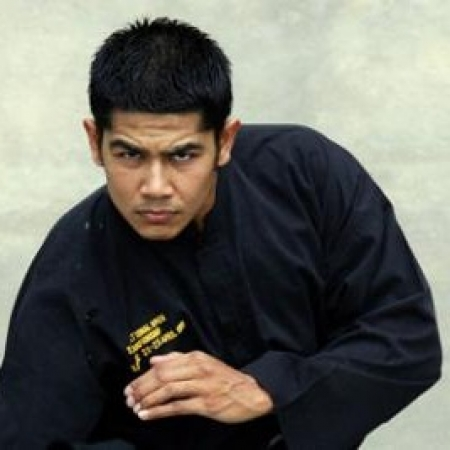

Abdul Kadir Ibrahim

Abdul Kadir Ibrahim, 41, of Singapore, passed away of a heart attack on Friday 16 August 2013.
Dubbed 'The Smiling Pesilat' for his seemingly unbreakable good-humour, Abdul Kadir was one of Singapore's finest fighters. Beginning his silat career in 1992, he was crowned World Champion in Class 'E' in 1997 in Kuala Lumpur, then claimed the title at the 1999 South East Asian games in Brunei.
Retiring as an athlete in 2005, Abdul Kadir turned his talents to coaching, running the junior national team from 2006 to 2007. Contrary to the common perception of martial arts coaches as tough and grim-natured, he was regarded by his students as a patient and understanding, and was much missed when he stepped down. Many of his former charges have gone on to win medals nationally and internationally, a testament to their coach's skills.
Abdul Kadir retained his connection with Silat, co-founding a school with his former team-mate while working at his transport business. A devoted father and husband, his youngest child was born just one month ago.
Kadir was a legendary athlete, admired by many athletes around the world for his fighting style as well as his conduct outside the ring. His life embodied the pesilat pledge - to be of noble mind and character, to honour one's fellow man, to think and act positively.
Abdul Kadir Ibrahim, Pesilat, 1972 - 2013. He leaves behind a wife and six children.